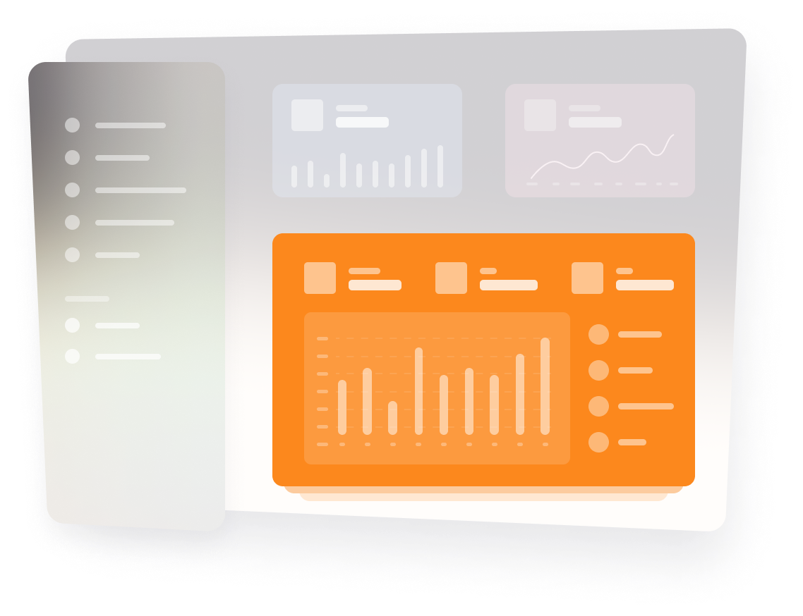

MANA SAYA TAU SAYA KAN PENCURRY
Social Media Tool Yang Tidak Akan Memberikan Kamu Insight Apapun
Adalah benar apa yang kamu baca barusan. Tool yang mainstream akan memberikan kamu pelbagai insight, karena kami anti-mainstream maka kami akan melakukan sebaliknya.

